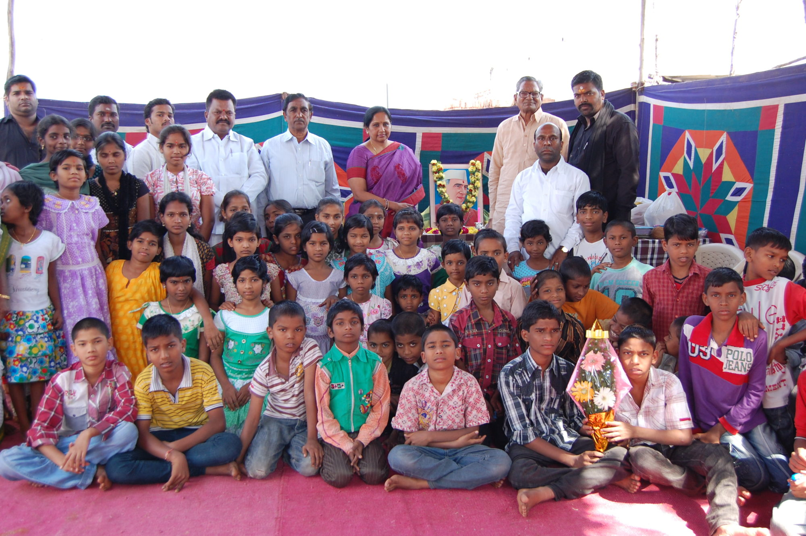

Orphanages list In Vizag(near to Vizag)
 |
Papa Home for Girls |
50-117-4, Maruti Nagar, Seethammadara,
Visakhapatnam, Andhra Pradesh 530013
Contact : 08912529866
|
 |
Adobe of Peace
|
Railway Station Rd, near Sangam Sarat Theatre, Dondaparthy,
Visakhapatnam, Andhra Pradesh 530016
Contact :098853 67278
|
 |
Sweet Home for Children Orphanage
|
12-486 Old Diry Foram, Ravindra Nagar,
Visakhapatnam, Andhra Pradesh 530040
Contact : 077021 10441
For More Info!! |
 |
Aananda Marga Aahsram
|
Indira Gandhi Nagar, Adarsh Nagar,
Visakhapatnam, Andhra Pradesh 530040
Contact :090305 02164 |
|
Spoorthi Orphanage
|
M.G.Road, Backside Holy Cross Church, Panthulugarimeda, Old Gajuwaka,
Visakhapatnam, Andhra Pradesh 530026
Contact : 08912529866
|
 |
Care and Love Orphanage
|
39-33-21/4, Vuda Layout, Madhavadhara,
Visakhapatnam, Andhra Pradesh 530018
Contact : 089127 33711
|
 |
Child Orphanage
|
New Paradesipalem, GVMC Ward 5,
near AUDI Service centre, Andhra Pradesh 531163
|
|
Manasu Orphanage
|
21-167, Srinivas Nagar, Prahaladapuram, Simhachalam,
Visakhapatnam, Andhra Pradesh 530029
Contact : +91 94946 68723
For More Info |
 |
Amma Nanna Orphanage
|
Aditya Nagar, Parawada, near Steel Plant Quarters,
Visakhapatnam, Andhra Pradesh 531021
|
 |
Krupa Sadhana Orphanage
|
Old madhura wada metta, near govt school, Midhilapuri Vuda Colony, Madhurawada,
Visakhapatnam, Andhra Pradesh 530041
Contact :070133 47587
For More Info |
|
Jesus Comfort Home
|
Industrial Colony, Malkapuram,
Visakhapatnam, Andhra Pradesh 530011
|
 |
Amma Odi
|
8-2-1-A, Revallapalem Road, Bakkannapalem, Srinivasa Nagar, Madhurawada,
Visakhapatnam, Andhra Pradesh 530043
Contact :090005 50256
|
|  |
Aaradhana Children Home
|
Near GVMC Water Tanks, LG Nagar , Peda Narava,
Visakhapatnam, Andhra Pradesh
Contact :094932 68661
|
 |
Anni Hannah Home
|
36-46-50, Kancharapalem Main Rd, Durga Nagar, Kancharapalem,
Visakhapatnam, Andhra Pradesh 530008, India
Contact :+91 90008 36448 |
 |
Good Life Orphanage
|
Krishna Nagar, Maharani Peta,
Visakhapatnam, Andhra Pradesh 530002 |
| |
Govt Children Home for Girls
|
Q87R+29R, Vishalakshi Nagar,
Visakhapatnam, Andhra Pradesh 530043 |